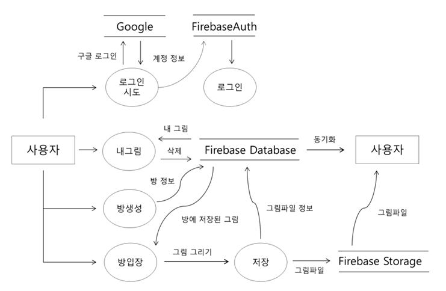

설명:
커져가는 구독 서비스 시장에서 발생하는 신유형 소비자문제인 '다크 넛지'에 대한 해결책을 제공하며
소비자로 하여금 정기 결제 상품들을 손 쉽게 관리하고 점점 늘어나는 가격 부담을 덜 수 있도록 돕는 앱
동아리에서 처음 MVP를 만든 이후 사용자의 급증으로 인해 추후 사업화를 도전
설명:
로봇 바리스타 '바리스'에게 안드로이드 테블릿을 이용하여 주문을 요청하고 바리스의 현재 행동을 모니터링 할 수 있는 서비스 외주 개발
주요작업 :
특정 동작이 구현된 Universal Robot을 바리스타의 주문에 맞게 행동하도록 구현하는 작업이었습니다.
라즈베리파이가 테블릿과 로봇을 이어주는 매개체 역할을 했는데, 라즈베리파이와 로봇은 랜 케이블로 연결되어 특정 아이피를 이용해
소켓통신으로 주문과 현재상황을 주고 받도록 설계되었습니다. 라즈베리파이와 안드로이드 테블릿은 동일한 WIFI를 이용해 내부 아이피로
소켓통신을 하여 주문을 요청하고 모니터링 데이터를 받았습니다.
작동 프로세스:
1. 안드로이드 테블릿에서 메뉴선택
2. 라즈베리파이에 비동기 소켓통신을 통해 주문을 전송
3. 라즈베리파이는 해당 주문에 맞는 정해진 데이터를 로봇에 전송
4. 로봇이 커피를 만드는 동안 각 행동의 시작과 끝에 테블릿으로 정보를 보내 모니터링
5. 로봇은 주문완료 후 새로운 주문 기다림
사용언어/기술 : Android(Java), Python, Node.js
안드로이드 - 라즈베리파이 : AsyncTask를 이용한 비동기 소켓통신
라즈베리파이 - Universal Robot : Python 소켓통신
라즈베리파이 : 강제 일시정지 및 재시작을 위한 Node.js서버 (pm2를 이용해 재부팅 시 자동실행)
에러사항 :
로봇의 경우 산업로봇과 다르게 실제 사람과 같은 공간에서 작업을 하기 때문에 특정 상황에 대한 처리가 필요했습니다.
예를 들면, 무언가에 부딪혔을 때 일시정시되어야 하는데 로봇이 행동을 하고 있을 때 강제 일시정지 명령을 내릴 방법이 없었습니다.
로봇의 행동을 모니터링하려면 계속 소켓을 닫지 않고 열어둔 상태여야 했기 때문인데 결국 로봇의 강제 명령어만을 위한 또 하나의 Node.js를 이용한
서버를 라즈베리파이에 올려서 해결할 수 있었습니다.
설명:
가맹점 키오스크(태블릿)에서 얼굴인식을 통해 결제를 바로 하는 시스템의 앱 외주 개발
주요작업 :
태블릿에서 Alchera API를 활용한 얼굴인식 후 얼굴정보 값을 활용해 사용자 결제 연결 모듈 개발
[모바일폰]
- 회원가입
- 얼굴인식 API 적용
[태블릿]
- 메뉴 선택 UI
- 얼굴인식 API 적용
- 얼굴 값 비교로 사용자 결제 연결
- 결제 실패 및 에러사항 처리
사용언어/기술 : Android(Java), Alchera Api(C++)
에러사항 :
외주사에서 Alchera Api를 이용해 서비스를 만들다가 실패해 외주로 넘겨 준 소스를 활용해 개발을 하게 되어 설명이 부족한 상태로 코드를 다루게 되었습니다.
얼굴인식 Api 코드를 활용하기 위해 1주일의 시간동안 코드 해석에만 매진을 해야했습니다.
이용방법 터듭 후에는 모바일에서는 api를 적용해 결제 정보 등록에 활용했고
태블릿에서는 실시간으로 얼굴인식을 하고 유저의 얼굴 데이터와 비교를 통해 결제로 넘어가는 식으로 구현했습니다.
설명:
제주도에서 사용하는 쿠폰을 구매할 수 있는 안드로이드 앱 개발
주요작업 :
위지기반으로 내 주변의 쿠폰을 이용 가능한 가맹점들을 표출하며 아임포트를 이용한 실결제 시스템 도입
개발기능 :
- 회원가입
- 상품 상세조회
- 장바구니 담기
- 위치기반 가맹점 표출
- 쿠폰 구매 및 사용
사용언어/기술 : Android(Java)
실결제 시스템: 아임포트의 외부 결제 Api 모듈 활용
에러사항 :
처음 접하는 실 결제 시스템 도입에서 서버 개발자와 지속적인 소통을 통해 실시간 반영되는 쿠폰의 값들을 확인해야 했기에 지속적으로 만나서 작업을 해야 했습니다.
설명:
처음 디자인을 받아서 서버 개발자와 협업을 해본 프로젝트입니다.
로그인부터 상품 조회, 상품 상세, 장바구니, 구매, 구매내역까지의 기능을 구현했습니다.
주 사용 기능/라이브러리:
- ViewPager와 Fragment : 4개의 메인 탭 및 상품 상세의 탭을 슬라이드로 Transaction되도록 연결
- RecyclerView, NestedScrollView : 매끄러운 스크롤러블 UI작성
- Retrofit2 : 비동기 서버통신
- Glide : 이미지 로드
- ExpandableListView : 펼쳐지는 주문내역 리스트 구현
혼자만 개발을 해보다가 처음으로 협업을 통해서 타협을 보는 과정을 경험해 볼 수 있었습니다.
Response로 받는 JSON의 형식에서부터 Body에는 어떤 값이 필요하고 뿌려줄 데이터로는 무엇이 필요한지 등
이야기를 나누며 가장 적합한 타협점을 찾는 과정이 너무 재밋었고 그로인해 더 효율적인 코드를 작성할 수 있었던 것 같습니다.
처음 적용해보는 기술들이 많았지만 발표날 마지막까지 시도를 멈추지 않았고 결국 발표전에 마무리할 수 있었습니다. 도전의 즐거움을 배울 수 있었고 포기하지 않으면 무엇이든
해결할 수 있다는 자신감을 얻을 수 있는 계기였습니다.
설명:
인하대학교 컴퓨터공학 종합설계 프로젝트입니다.
Untact 시대에 맞춰 멀리 떨어져서도 같은 공간에서 그림을 그리는것 같은 경험을 줄 수 있는 안드로이드 애플리케이션입니다.
특징:
1. Firebase Realtime Database와 Storage를 이용해 서버를 대체했습니다. 그림을 그리는 동안 다른 사람의 그림이 업로드 되면 해당 그림이 바로
다운로드 되어 화면에 나타납니다.
2. AR Core를 이용대신 화면에서 사용자의 터지의 움직임을 array에 데이터로 저장해 그림을 bitmap형태로 만들어서 Storage에 저장하였습니다.
3. 카메라 권한을 가지고 카메라의 뷰 위에 SurfaceView를 두어 공간상에 그림을 그리는 느낌을 주었습니다.
4. 안드로이드 모바일의 가속도 센서와 Rotation Vector로부터 가져온 azimuth(방위각), pitch, roll을 그림 저장데이터에 포함시켜 그림을 조회 시
해당 방향을 단말기가 바라볼 때 그림이 띄워지도록 하였습니다.
맡은 역할:
1. Firebase Authentication을 이용한 Google 회원가입
2. 전반적인 앱 UI 작성 (메인, 방찾기, 내 그림 화면)
3. FirebaseDatabase 연동 - 회원 정보, 그림방(만들기, 조회), 그림(조회, 업로드)
주 사용 기능/라이브러리:
- SurfaceView, Canvas : 그림을 그려지는 화면의 뷰
- RecyclerView : 방 목록 리스트화
- Glide : 이미지 로드
Data Flow Diagram:

고민:
해당 프로젝트를 진행하면서 그림을 어떤 형식으로 저장할 지에 대한 기획을 잡기 위해 시행착오가 많았지만 시대에 맞춘 앱을 만들어 본다는 부분에서 뜻
깊었습니다.
그림을 같이 그리고 있다는 느낌을 주기 위해 실시간 동기화가 가능한 방법을 생각했고 그 결과로 AWS EC2에 서버를 올리는 대신 Firebase Realtime
Database를 이용하여 변경되는 사항이
같은 방에서 그림을 그리는 사용자에게 바로 적용될 수 있도록 할 수 있었습니다.
GO Github